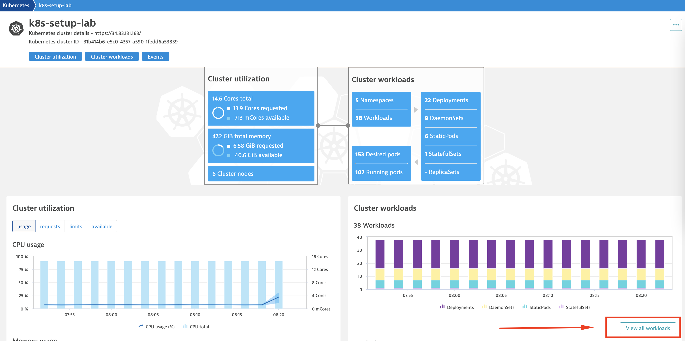
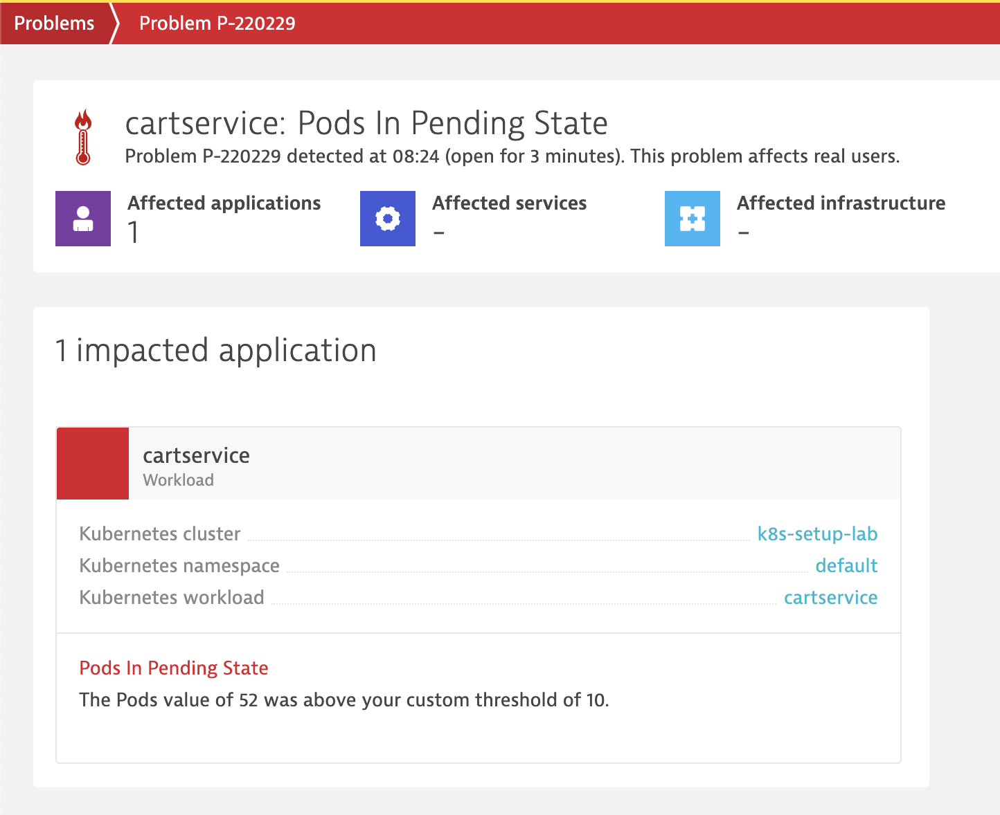

What You'll Learn Today
Today we will cover the installation and value provided by the Dynatrace Kubernetes Operator deployment
The Dynatrace operator is the k8s native way to gain full stack observability in your kubernetes and open shift environments. The Dynatrace operator provides continuous, automatic discovery & observability across your kubernetes workloads. In this lab we'll work specifically with the cloud native deployment mode which will allow us to instrument only targeted namepsaces

In today's lab we will
- Deploy the Dynatrace Operator in cloud native mode
- Deploy a Microservice application to multiple namespaces
- Instrumnent only the "production" namespace
- Setup Persistent Volume Claim Monitoring
- Review the full stack data collected by Dynatrace
Technologies We Will Work With Today
- Dynatrace SasS Tenant
- kubectl cli
- Kubernetes
- Customized Google Microservices Demo Application
- Dynatrace Operator
Prerequisities
The following are assumed to be already running and/or configured for this workshop
First we'll need to grab the configuration files deploy the Dynatrace OneAgent.
- Navigate to: DYNATRACE HUB –> ONEAGENT –> DOWNLOAD ONEAGENT
- Select "Kubernetes"

- At the next screen we'll need to provide some values:
- Populate the name field, note that this must be unique to your environment
- Click on "create tokens", this will generate new tokens for the operator deployment
- Toggle on "skip ssl cert check"
- Toggle on "Enable Volume Storage"
- Click on "Download dynakube.yaml"

Next we'll create a namespace for all the Dynatrace components. Then deploy the Operator and the CSI (Container Storage Interface) pods.
- Create the dynatrace namespace:
kubectl create namespace dynatrace - Deploy the Dynatrace operator
kubectl apply -f https://github.com/Dynatrace/dynatrace-operator/releases/latest/download/kubernetes.yaml - Verify that the Dynatrace operator and webhook pods have started:
kubectl get pod -n dynatrace - Your output should be similar
NAME READY STATUS RESTARTS AGE dynatrace-operator-678d8f9d75-tmnn2 1/1 Running 0 54s dynatrace-webhook-b798d4cb5-nh426 1/1 Running 0 54s dynatrace-webhook-b798d4cb5-tzz5q 1/1 Running 0 54s - deploy the dynatrace csi drivers. Please note these are required for CloudNative mode
kubectl apply -f https://github.com/Dynatrace/dynatrace-operator/releases/latest/download/kubernetes-csi.yaml - This will deploy a Daemonset to your cluster
NAME READY STATUS RESTARTS AGE dynatrace-oneagent-csi-driver-d4rr6 3/3 Running 0 5m33s dynatrace-oneagent-csi-driver-hbpdh 3/3 Running 0 5m33s dynatrace-oneagent-csi-driver-pj2xm 3/3 Running 0 5m33s dynatrace-operator-678d8f9d75-tmnn2 1/1 Running 0 9m52s dynatrace-webhook-b798d4cb5-nh426 1/1 Running 0 9m52s dynatrace-webhook-b798d4cb5-tzz5q 1/1 Running 0 9m52s
Now we can deploy an application to our kubernetes cluster. This does require two changes to the dynakube yaml file we downloaded from our tenant.
- Add the below snippet to the dynakube.yaml just above the oneAgent section at approxmiately line 60
namespaceSelector: matchLabels: could-native: enabled - Change "the classicFullStack" value under the oneAgent stanza to "cloudNativeFullStack"
- Before
oneAgent: # Optional: enable classic fullstack monitoring and change its settings # Cannot be used in conjunction with cloud-native fullstack monitoring, application-only monitoring or host monitoring classicFullStack: # Optional: If specified, indicates the OneAgent version to use # Defaults to latest # # version: - After
oneAgent: # Optional: enable classic fullstack monitoring and change its settings # Cannot be used in conjunction with cloud-native fullstack monitoring, application-only monitoring or host monitoring cloudNativeFullStack: # Optional: If specified, indicates the OneAgent version to use # Defaults to latest # # version: - The two modifications made should be next to each other, with you final dynakube.yaml looking like this
# Optional: when enabled, and if Istio is installed on the Kubernetes environment, then the # Operator will create the corresponding VirtualService and ServiceEntry objects to allow access # to the Dynatrace cluster from the agent or the activeGate. Disabled by default. # # enableIstio: false namespaceSelector: matchLabels: could-native: enabled oneAgent: # Optional: enable classic fullstack monitoring and change its settings # Cannot be used in conjunction with cloud-native fullstack monitoring, application-only monitoring or host monitoring cloudNativeFullStack: # Optional: If specified, indicates the OneAgent version to use # Defaults to latest # # version: - Make sure all changed have been saved and deploy the Dynatrace operator
kubectl apply -f dynakube.yaml - The below output will print when the operator has finished installing
secret/dynatrace-lab created dynakube.dynatrace.com/dynatrace-lab created - Verify that all pods have been succefully deployed by running
kubectl get pods -n dynatrace - Which should out put something similar to below:
NAME READY STATUS RESTARTS AGE dynatrace-lab-activegate-0 1/1 Running 0 2m41s dynatrace-lab-oneagent-5mhf9 1/1 Running 0 2m42s dynatrace-lab-oneagent-6vqcd 1/1 Running 0 2m42s dynatrace-lab-oneagent-t4bz7 1/1 Running 0 2m42s dynatrace-oneagent-csi-driver-d4rr6 3/3 Running 0 29m dynatrace-oneagent-csi-driver-hbpdh 3/3 Running 0 29m dynatrace-oneagent-csi-driver-pj2xm 3/3 Running 0 29m dynatrace-operator-678d8f9d75-tmnn2 1/1 Running 0 33m dynatrace-webhook-b798d4cb5-nh426 1/1 Running 0 33m dynatrace-webhook-b798d4cb5-tzz5q 1/1 Running 0 33m
Now that we've gotten our pods up and running we'll turn on feature flags the Kubernetes API and enable PVC metric ingestion in our cluster. These features are both dependent on the activegate we deployed with the Dynakube yaml in the last step.
- In your Dynatrace tenant, navigate to INFRASTRUCTURE –> KUBERNETES Here you can your newly deployed cluster and any other k8s cluster you may have monitored with Dynatrace.
- Click on "..." under "actions" and select "Settings"
- Enable all available feature flags
- Click on "Save Changes"
- In your Dynatrace tenant, navigate to DYNATRACE HUB –> Search for "PVC" –>

- Click on "Add to environment"

Lets review the data Dynatrace has collected already
Out of the box, Dynatrace automatically collects telemetry for
- Cluster utilization metrics
- CPU & Memory Usage, Request and Limits
- Kubernetes Workload Metrics Aggregated by
- Workload Type
- Pods
- Namespaces
- Kubernetes Vulnerabilities (
note: this module may not be enabled in your environment)

Lets also note what is missing, Kubernetes events!
We configured Dynatrace to capture all events in this cluster in our last step (enabling "monitor events") We will now create a new application deployment which will populate Kubernetes native events in our dashboard
Now we will deploy our sample application across two namespaces. We will use the Google Microservices demo application "Online boutique", this version has been branched from the original. This version uses and nginx ingresses and pvc for the redis pod for the purposes of this lab.
- First we will create two namespaces, one for a lower envrionment and one for production.
kubectl create namespace lower kubectl create namespace production - Next we will label the production namespace for full stack injection
kubectl label namespace production cloud-native=enabled - With this label in place only the production namespace, and any other namspace with this label applied, will be instrumented via fullstack when we deploy. All others will This specific key=value pair was set in step 5 of the lab by setting the
namespaceSelector:value. This can be modified to match your own environment variables. - Lets deploy the dt-boutique application to both the lower and production namespaces
kubectl apply -f https://raw.githubusercontent.com/kyledharrington/dt-boutique/main/dt-boutique.yaml -n lower kubectl apply -f https://raw.githubusercontent.com/kyledharrington/dt-boutique/main/dt-boutique.yaml -n production - It should take about 2 minutes for all pods come up in both namespaces. You can check pods status by running:
kubectl get pod -n production; kubectl get pod -n lower - Once all your pods are running you can find the external endpoint to access the application by running:
kubectl get svc --all-namespaces| grep nginxlower nginx LoadBalancer 10.28.0.96 34.82.229.185 80:32116/TCP 4d7h production nginx LoadBalancer 10.28.14.73 34.105.55.209 80:32543/TCP 4d7h - Copy the EXTERNAL-IP address and paste it into a browser:

While we configured the front end of the application, the OneAgent daemonset we deployed earlier has been collecting our newly deployed application's telemetry data.
Kubernetes Specific Data points
- In your Dynatrace tenant, navigate to INFRASTRUCTURE –> KUBERNETES
- If we scroll down to the events section, we'll see that this now populating k8s native events from the google microservices deployment:
- Image pulls
- New scheduling events
- Pod starts

Persistent Volume Claim Data Points
- The configured PVC entention enables multiple new PVC specific metrics from the kubelet volumes for customized reporting and dashboarding.
- These metric data points are also automatically populated for PVC statistics in an out of the box dashboard, "Kubernetes Persistent Volume Claims" for your clusters once enabled:

Cloud Native Full stack differences:
- In the lower environmnet where we did not configure application injection, while we do not provide "service" or application performance metrics, we are still collecting all infrastrucute and pod level data points:
- Meanwhile in production Dynatrace is providing full-stack visibility:
Now that we've seen how to dynatrace instruments an existing application lets see how dynatrace handles and instruments pods scaling in our production environment
- Back in the cloud console lets see how many pods are currently running in the production namespace
kubectl get pod -n production - Your console should return similar to the below:

kubectl get deployments -n production - Lets take a look a the deployments in the namespace, specifically the cart service

- Lets scale the cart service up to 10 pods
kubectl scale deployment -n production cartservice --replicas=10 - This will begin spinning up new pods. You can see this by running:
kubectl get pods -n production - Dynatrace will automatically instrument these new pods with code level visibility. If we were to do this in the "lower" namespace we would only have infrastructure level visibility.
- Once the 10 new pods have stabilized, let see how Dynatrace handles a pod failure event. Lets scale these pods up simulate either a DDOS attack triggering an HPA or an under provisioned Kubernetes cluster.
Simulating a Reliability Engineering scenario with Dynatrace
- Lets scale the cart service up to 100 pods >:)
kubectl scale deployment -n production cartservice --replicas=100
- Navigate to Kubernetes Engine –> Clusters –> Workloads 
- From here we can immediately see that dynatrace has found an issue with trying to scale up the 100 pods we requested:
- all pods have been grouped together under the cart service work load
- only 48 of the 100 we we requested we scheduleable
- Dynatrace has automatically created a problem beacuase of the resource contention

- With this information, Dynatrace can be leveraged to proactively scale these nodes or descrease the pods scaling to resolve the resouce contention. 
- Lets scale the pods back down
kubectl scale deployment cartservice --replicas=10 - From the workload level we can see the scaling events taking place:

- Once the pods stabilize dynatrace will automatically close this problem:

Lab recap
Today we reviewed how the dynatrace platform can be leveraged to provide full stack observability across your kubernetes environments. To you learned how to
- Deploy the Dynatrace Operator in cloud native mode
- Deploy a Microservice application to multiple namespaces
- Instrumnent only the "production" namespace with Dynatrace
- Setup Persistent Volume Claim Monitoring
- Review all data collected by Dynatrace